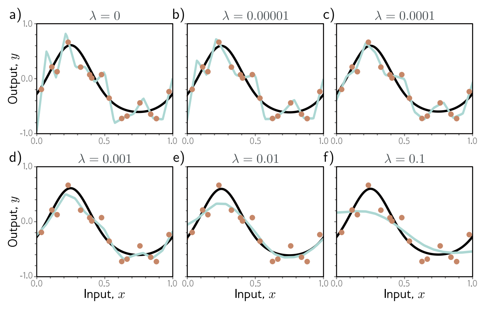
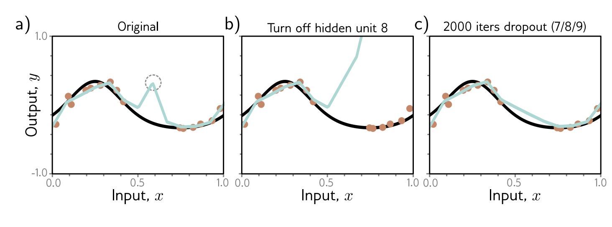
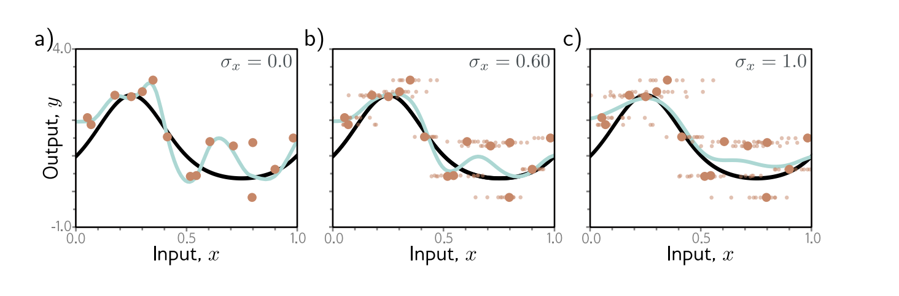
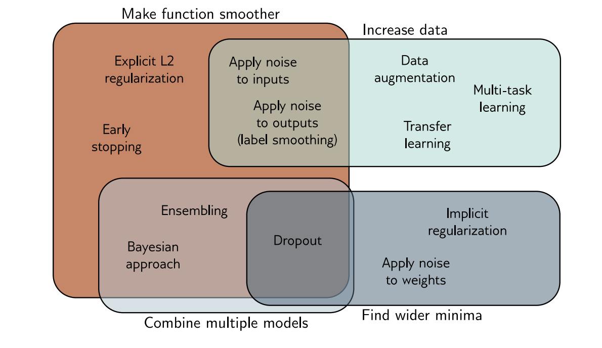

C9.Regularization
狭义上来说, Regularization指在损失函数中添加东西, 用于在训练中利于某个参数的选择. 广义上来说, Regularization 可以指任何用于提升泛化性能的策略.
1.Explicit regularization
训练模型的结果可以用下面的式子表示:
$\ell_i[\bold x_i, \bold y_i]$可以指代每一项$f[\bold x_i,\boldsymbol \phi]$与$\bold y_i$之间的差距, e.g.平方误差可以写成$\ell_i[\bold x_i, \bold y_i] = (f[\bold x_i,\boldsymbol \phi]-\bold y_i)^2$
为了偏好某个参数, 我们可以加一项:
1.1.Probabilistic interpretation(不理解)
在极大似然函数中添加一个*prior*作为某种关于参数的前置知识:
注意这里是极大似然, 用的是argmax. 每一项乘以一项$Pr(\boldsymbol \phi)$, 这是每一个参数的全局概率??
再加上负对数, 得到:
1.2.L2 regularization
对参数的平方和大小进行惩罚:
在神经网络中, L2 norm通常只用在权值而不用在bias.
L2 norm可以让拟合变得更加粗糙, 试想所有的weight都很小, 就不会出现突变, 进而变得更加平滑, :

1.当网络过拟合, L2 norm可以减少variance, 但相应的会增加bias.
2.当over-parameterized, L2 norm可以帮助模型在数据间隙选择平滑的函数
2.Implicit regularization
最近发现: 梯度下降和随机梯度下降都有某种解决方法偏爱. 这被称为implicit regularization(隐式正规化)
2.1.gradient descent
离散步骤的梯度下降导致了某种regularization.
想象一个连续步骤的梯度下降(通过将learning rate设置的很小), 离散梯度下降和连续梯度下降在轨迹上有所不同, 连续梯度下降可以通过在损失函数中添加一项达到和离散梯度下降相同的效果:
证明略
上述说明了, 离散梯度相对于连续梯度偏好梯度更小的地方, 这就是梯度下降的隐式regularization
2.2.stochastic gradient descent
相同的方法可以用在SGD的分析:
证明略
上述说明了, 除了和GD一样偏好梯度更小的地方, SGD还偏好variance更小的地方(where all the batches agree on the slope)
3.Heuristic to improve performance(启发式方法)
3.1.Early stopping
方法 只有一个超参数: 经过多少步停下来.
3.2.Ensembling(集成)
方法 训练多个模型取平均
3.3.Dropout
方法 随机踢掉网络节点, 见“DL入门”dropout层.
用处 可以消除拟合函数中讨厌的“kinks”, 使函数更平滑:

上图中, 图1在没有训练样本监督的区域形成了一个凸起, 这样的凸起无疑影响泛化性能. 这样的凸起可以看作是三个节点的组合: 第一个在第一个位置斜率很大(+), 第二个在中间位置斜率很小(-), 第三个在第三个位置刚好中和前两者的斜率. 通过dropout踢掉三个节点当中的一个可以在有监督区域造成很大的影响, 进而纠正节点.
3.4.Applying noise
方法 dropout可以解释为对网络节点的激活应用multiplicative Bernoulli noise.
1.在每轮训练中, 对训练集$\{x_i, y_i\}$ 的输入$x_i$添加高斯噪音: $\{x_i+N(0, \sigma^2_x), y_i\}$. 相当于添加了L2 norm项(见Problem9.3)
2.在每轮训练中对权值添加噪音
3.对训练集的label $y_i$ 添加噪音
用处 使函数更加平滑:

上述使用了方法1, 数据的左右随机移动使噪音也变得难以拟合hha.
3.5.Bayesian inference
3.6.Transfer learning and multi-task learning
将用于其他任务的已经训练好的网络稍加改装用于当前任务的训练, 可以在训练集较小的情况下成功训练.
改装方式: 去掉原网络的最后一层, 再在网络末尾增加额外的层, 对于新任务只训练新加的层或对整个网络进行fine-tuning.
3.7.self-supervised learning
3.8.Augmentation
方法 人为拓展数据集
4.总结
Regularization无疑是这几章以来最乱的一章, 总之, 这些方法均可以提升泛化性能.

Find wider minima 指降低训练出权值的精确性, 从而达到某种不受训练数据影响的泛化性能.
§Problems
Problem9.3
Consider a linear regression model $y = ϕ_0 + ϕ_1x$ with input $x$, output $y$, and parameters $ϕ_0$ and $ϕ_1$. Assume we have I training examples $\{x_i, y_i\}$ and use a least squares loss. Consider adding Gaussian noise with mean zero and variance $σ^2_x$ to the inputs $x_i$ at each training iteration. What is the expected gradient update?
Solution 训练过程如下:
可见, 引入高斯噪音后, 对权值$\phi_1$做了惩罚. 不过和L2 norm还是有公式上的差别的.
$\color{red} \bold{Answer}$ 虽然公式上和L2 norm有差别, 但是损失函数的期望(关于高斯分布)和L2 norm的损失函数是一样的:
设$\epsilon_i=N(0,\sigma^2_x)$ , 则引入高斯噪音后的损失函数为:
则, 关于高斯分布的期望有:
相当于L2 norm的系数 $\lambda=I \sigma^2_x$